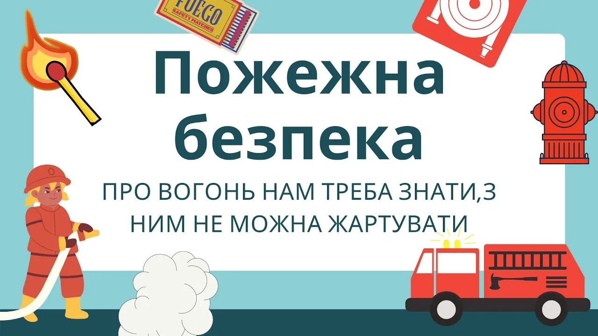
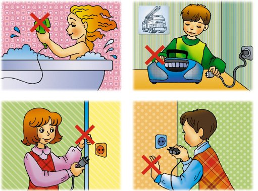

Чому важливо знати правила пожежної безпеки?
Пожежа може виникнути будь-де: вдома, у школі чи на вулиці. Дуже часто причиною стають пустощі з вогнем, недбалість із сірниками чи запальничками. Тому знати правила безпеки — означає зберегти своє життя і здоров’я.

Приклади небезпечних ситуацій
- Діти запалили свічку і залишили її без нагляду — сталася пожежа.
- Хлопчик кинув петарду у підвал, загорілася проводка.
- Дівчинка гралася із запальничкою біля ліжка — спалахнула ковдра.
Як себе вберегти?
🔥 Не грайся з сірниками, запальничками, петардами.
🔥 Не залишай ввімкнені електроприлади без нагляду.
🔥 Якщо побачив дим чи вогонь — одразу клич дорослих і телефонуй 101.
🔥 Ніколи не ховайся від пожежі під ліжком чи у шафі — краще виходь на вулицю.
Пожежна безпека при роботі з комп’ютером та електроприладами
Електроприлади також можуть стати причиною пожежі, якщо користуватися ними неправильно. Тому важливо дотримуватись простих правил:
- Не перевантажуй розетки великою кількістю приладів.
- Використовуй лише справні подовжувачі та зарядні пристрої.
- Не залишай увімкнений комп’ютер чи зарядку без нагляду на тривалий час.
- Не клади тканину, одяг чи папір на комп’ютер або інші прилади — це може спричинити займання.
- Якщо відчув запах гару чи побачив дим — негайно вимкни прилад з розетки і повідом дорослих.

Вікторина: Що можна, а що не можна робити?
Перетягни твердження у правильну колонку
Телефонувати 101 під час пожежі
Гратися з сірниками
Підпалювати петарди у дворі
Вимикати електроприлади, виходячи з дому
Ховатися у шафі від вогню